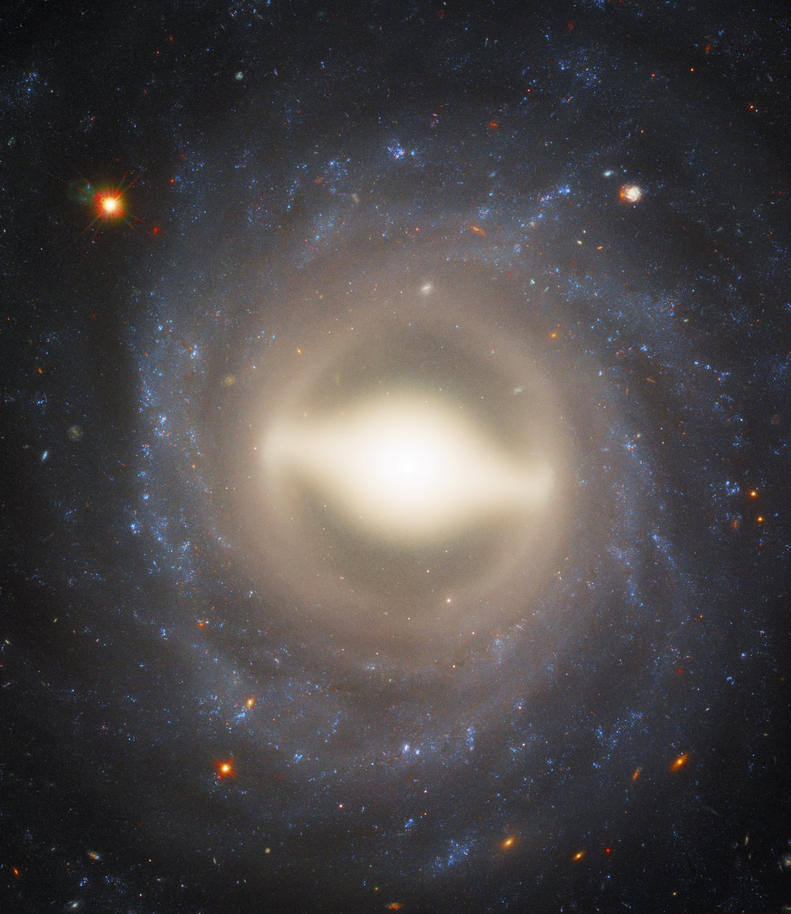

Probing the local dust environments of SNe Ia with light echoes
Credit: ESA/Hubble & NASA, A. Riess (STScl/JHU) Half of my research work focuses on using light echoes as a method for probing the progenitor system of SNe Ia and determining the local dust properties for the host galaxy. Light echoes are transient reflection nebulae, created by dust scattering photons from any transient or variable source into our line of sight. They have a very particular geometry, which allows us to relate the observed angular size of the light echo, the distance between us and the source, the distance between the source and the scattering dust, and the time of observation to make a map of the dust distribution. Depending on the location of the dust around a SN Ia, we can make inferences about the progenitor system, determine dust grain size distribution and composition, or both. The progenitor system and the assumed vs. actual dust properties are both relevant for SNe Ia standardization and cosmology.
I have an HST Archival Research program accepted to search for more light echoes around nearby SNe Ia and build up the sample. To date, only 7 SNe Ia are known to host light echoes. We hope to be able to put constraints on the relative occurrence rates of single- vs. double-degenerate SNe Ia progenitors and determine if extragalactic dust in other spiral galaxies is similar to Milky Way dust.
I am currently looking for an undergraduate to work on this research, either for stipend or class credit. Iowa State students given preference, but I can ask about external students if needed.
Collaborators: P. Garnavich, S. Lawrence, P. Milne
| Date | Title & Authors | Links |
|---|---|---|
| TBD | Detection of a Light Echo and Characterization of the Local Dust Environment Around Type Ia Supernova 2009ig; C. M. Wood, P. Garnavich, S. Lawrence, et al.; in prep |
N/A |
| Date | Location | Type |
|---|---|---|
| 01/12/2023 | 241st Meeting of the AAS, Seattle, WA | Dissertation talk |
| 01/21/2022 | KIPAC, Stanford University, Stanford, CA (done virtually) | Invited tea talk/job talk |
| 04/15/2021 | Michiana Astronomical Society, South Bend, IN (done virtually) | Invited seminar |
| 03/23/2021 | Utah Valley University, Orem, UT | Invited colloquium |
| 02/19/2021 | University of Louisville, Louisville, KY (done virtually) | Invited colloquium |
| 10/06/2020 | University of Notre Dame, South Bend, IN (done virtually) | Invited seminar |
| 01/06/2020 | 235th Meeting of the AAS. Honolulu, HI | Contributed poster |
| 11/13/2019 | GPS Annual Conference, University of Notre Dame, South Bend, IN | Contributed poster |
| 09/26/2019 | Midwest Workshop on Supernovae & Transients, Ohio State University, Columbus OH | Contributed poster |
| 04/17/2019 | GPS Annual Conference, University of Notre Dame, South Bend, IN | Contributed talk |
| 03/19/2019 | University of Notre Dame, South Bend, IN | Invited seminar |
| 03/13/2019 | Hofstra University, Hempstead, NY | Invited seminar |
| 02/25/2019 | Midwest Workshop on Supernovae & Transients, University of Chicago, Chicago, IL | Contributed talk |
| 01/07/2019 | 233rd Meeting of the AAS, Seattle, WA | Contributed poster |